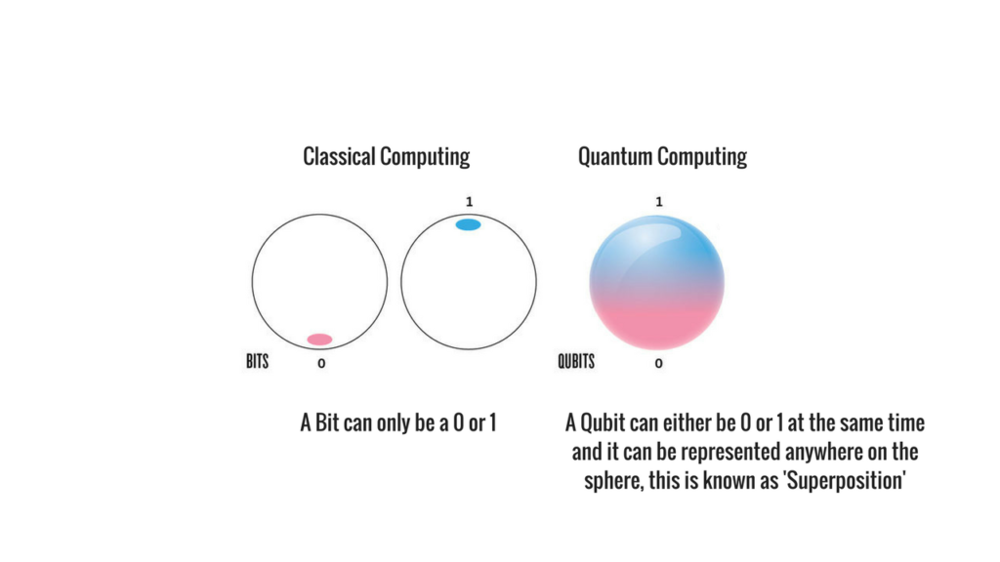

Quantum Computer :
Quantum computers are machines that use the properties of quantum physics to store data and perform computations. This can be extremely advantageous for certain tasks where they could vastly outperform even our best supercomputers. Classical computers, which include smartphones and laptops, encode information in binary “bits” that can either be 0s or 1s. In a quantum computer, the basic unit of memory is a quantum bit or qubit. Qubits are made using physical systems, such as the spin of an electron or the orientation of a photon. These systems can be in many different arrangements all at once, a property known as quantum superposition. Qubits can also be inextricably linked together using a phenomenon called quantum entanglement. The result is that a series of qubits can represent different things simultaneously. For instance, eight bits is enough for a classical computer to represent any number between 0 and 255. But eight qubits is enough for a quantum computer to represent every number between 0 and 255 at the same time. A few hundred entangled qubits would be enough to represent more numbers than there are atoms in the universe. This is where quantum computers get their edge over classical ones. In situations where there are a large number of possible combinations, quantum computers can consider them simultaneously. Examples include trying to find the prime factors of a very large number or the best route between two places. However, there may also be plenty of situations where classical computers will still outperform quantum ones. So the computers of the future may be a combination of both these types.
Superposition
Schrodinger cat's experiment
Schrodinger's imaginary experiment, you place a cat in a box with a tiny bit of radioactive substance. When the radioactive substance decays, it triggers a Geiger counter which causes a poison or explosion to be released that kills the cat. Now, the decay of the radioactive substance is governed by the laws of quantum mechanics. This means that the atom starts in a combined state of "going to decay" and "not going to decay". If we apply the observer-driven idea to this case, there is no conscious observer present (everything is in a sealed box), so the whole system stays as a combination of the two possibilities. The cat ends up both dead and alive at the same time. Because the existence of a cat that is both dead and alive at the same time is absurd and does not happen in the real world, this thought experiment shows that wavefunction collapses are not just driven by conscious observers.

Why care about it?

- Cryptography :
- Crack many systems that keep our online information secure
- Resistant to quantum hacking
- More secure than their conventional analogues
- Science :
- Model complex chemical reaction
- Simulate a hydrogen molecule for the first time
- Design entirely new molecules for use in medicine
- Haber-Bosch process – a way of artificially producing ammonia
- Mathematics :
- Finding very large prime numbers
- Advanced machine learning
- Improved artificial intelligence
- Optimization problems (Climate model, traffic, airport)
- Data base searching


How close are we to quantum supremacy?
For now, quantum computers are highly sensitive: heat, electromagnetic fields and collisions with air molecules can cause a qubit to lose its quantum properties. This process, known as quantum decoherence, causes the system to crash, and it happens more quickly the more particles that are involved. Quantum computers need to protect qubits from external interference, either by physically isolating them, keeping them cool or zapping them with carefully controlled pulses of energy. Additional qubits are needed to correct for errors that creep into the system.

"If you think you understand quantum mechanics, you don't understand quantum mechanics." -Richard Feynman